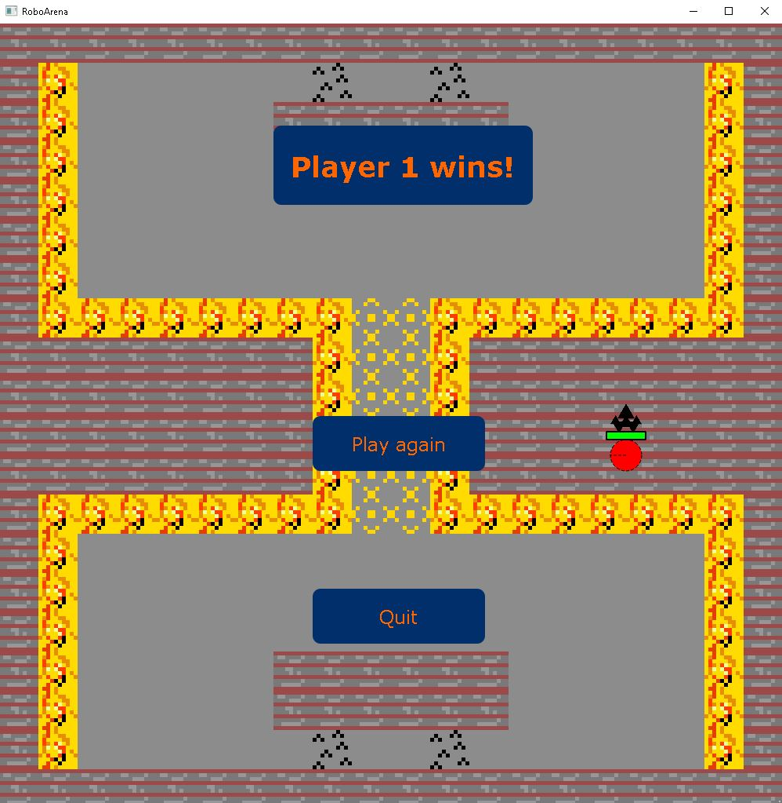
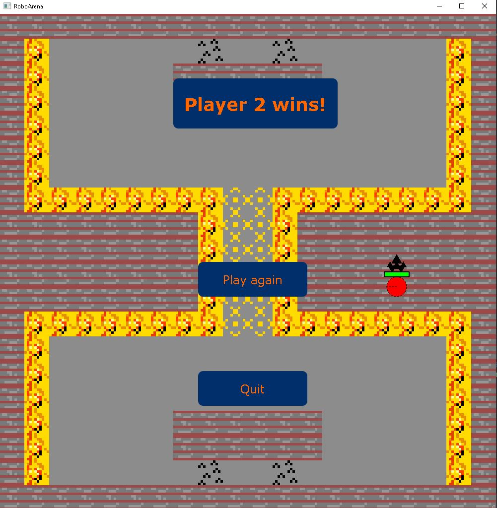
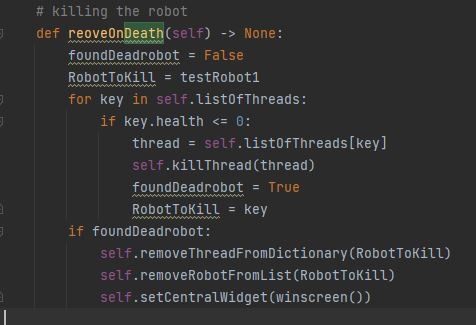
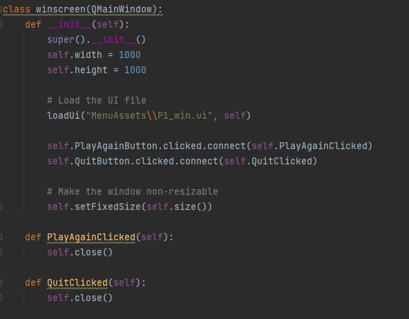

Including Win Screen (Nico)
If one of the players health drops to 0, a win screen appears.
Player 1 wins:

Player 2 wins:

The UI is made in Qt Designer:


- If a dead robot gets detected, we let the winscreen appear by using the setCentralWidget function.
- Its the same way, how we switch between menu windows.

- If the wincondition is fullfilled, the win screen will appear on screen.
- Clicking the "Play again" button should start an instant rematch.
- The "Quit" button should lead back to the main menu.